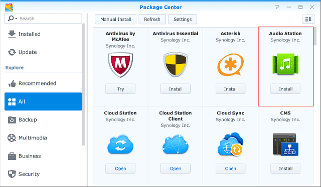
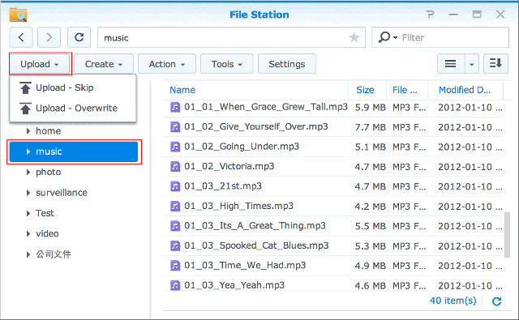
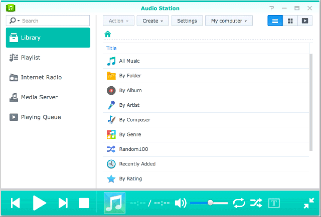
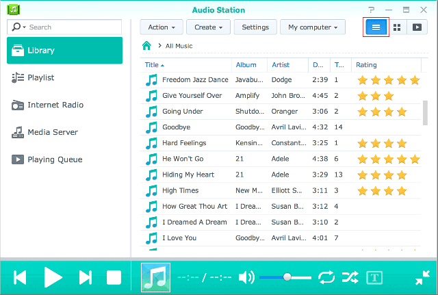
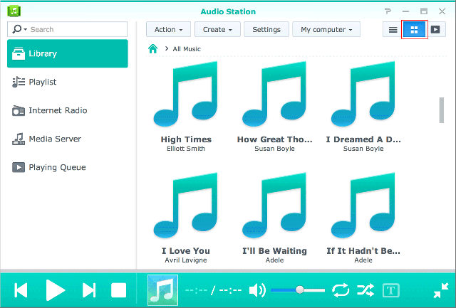
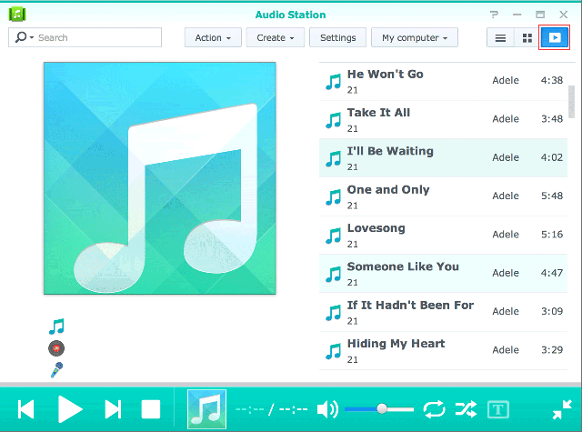
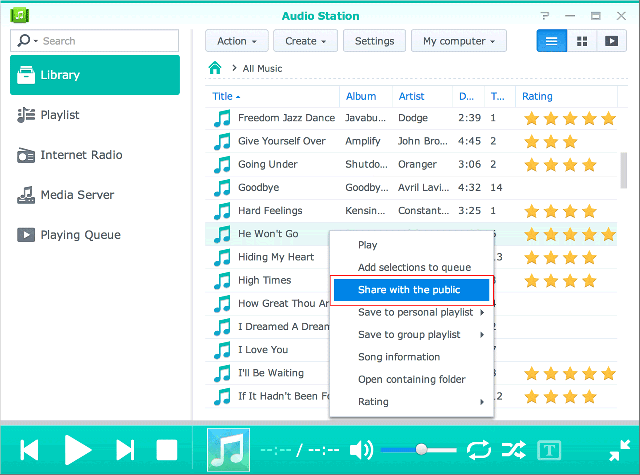
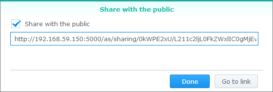
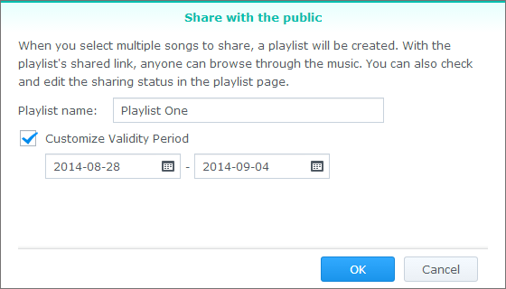

Visão geral
Com o Audio Station você pode organizar, pesquisar e reproduzir as músicas armazenadas em seu Synology NAS através da Internet. O Audio Station também suporta uma grande seleção de tipos de arquivos para que você possa aproveitar suas músicas em qualquer formato e da maneira que quiser. Você também pode baixar o DS Audio, um aplicativo móvel que complementa o Audio Station e que permite que você acesse as músicas do Synology NAS quando estiver em trânsito.
1. Instalação do Audio Station
- Vá para Centro de pacotes e encontre o Audio Station. Clique em Instalar. 
2. Armazene arquivos de áudio na pasta music
- Vá para File Station > music e clique em Carregar. 
- Selecione os arquivos que deseja carregar em sua pasta music de seu computador local.
3. Procurar música
Depois de carregar os arquivos de música, você pode reproduzir e navegar pelas suas músicas no Audio Station. Se quiser habilitar o acesso e navegar em seus arquivos de música quando você não estiver em sua rede local, recomendamos a habilitação do QuickConnect em Painel de controle > QuickConnect. Se você não tiver uma conta Synology, poderá abrir uma em minutos e dar ao seu DiskStation um QuickConnect ID. Com essa opção habilitada, você poderá entrar no DSM e acessar suas músicas de qualquer lugar. Você também pode usar seu QuickConnect ID para entrar no DS audio para não ter o aborrecimento de precisar memorizar seu endereço IP.
3.1 Biblioteca
A biblioteca contém músicas na pasta compartilhada music ou qualquer outra pasta indexada de seu Synology NAS. Na guia Biblioteca, suas músicas são classificadas em categorias para lhe oferecer opções diferentes e para que você possa navegar facilmente em suas músicas de acordo com suas necessidades e preferências. Além disso, ela permite que você encontre facilmente qualquer música que esteja procurando. É possível clicar em cada categoria para realizar sua pesquisa ou selecionar a categoria em que você deseja pesquisar do menu suspenso na barra de pesquisa.
3.2. Modos de exibição
Os ícones no canto superior direito do Audio Station permitem que você alterne entre diferentes modos de exibição nos quais é possível navegar em sua biblioteca de músicas.
- A exibição de lista permite a exibição de suas músicas como uma lista, exibindo o nome da música, o artista, o álbum, a duração da música, o número da faixa e a classificação. 
- Arte exibe o nome da faixa, o nome do álbum e a arte do álbum. 
- Fila de reprodução exibe a fila de reprodução em tela cheia com as capas dos álbuns e os títulos ou letras das músicas. 
4. Compartilhamento público
A função de compartilhamento público do Audio Station permite que você compartilhe músicas com o público fornecendo a você um link que você pode enviar para as pessoas que não estão em sua rede ou que não têm um Synology NAS. Quando elas tiverem o link, poderão ouvir as músicas.
4.1. Compartilhamento de músicas com o público
- Clique com o botão direito na música que deseja compartilhar e selecione Compartilhar com o público. 
- Existem duas opções quando você estiver compartilhando músicas com o público:
- Se você selecionar uma única música para compartilhar, na caixa de diálogo que aparece, marque a caixa ao lado de Compartilhar com o público para habilitar o link de compartilhamento. 
- Se você selecionar várias músicas para compartilhar, será criada uma lista de reprodução. Você pode nomear sua lista de reprodução assim como ter a opção de especificar um período de validade para o link marcando a caixa ao lado de Personalizar período de validade e clicando em OK. 
- Copie o link e envie-o para a pessoa com a qual você deseja compartilhar a lista de reprodução ou clique em Ir para o link para acessar o link diretamente.
5. Organize e reproduza músicas em seus dispositivos móveis
O DS audio funciona no iPad/iPhone/iPod touch, dispositivos Android e Windows Phones. O aplicativo está disponível grátis na Apple App Store, Google Play e Windows Phone Store. Também é possível escanear o código QR abaixo para baixar instantaneamente.